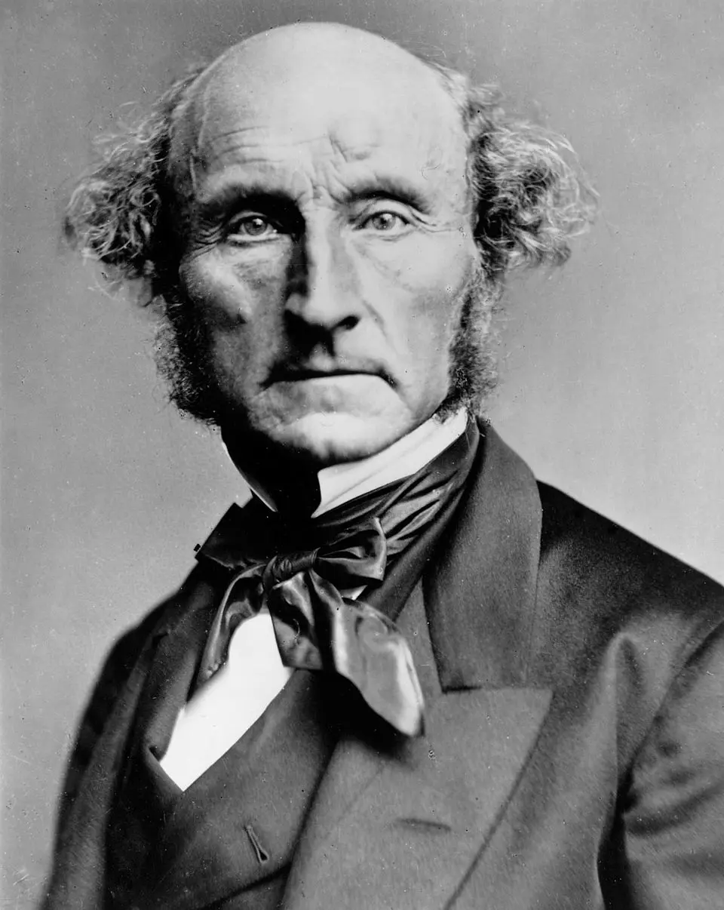

- Parent page → “How can I improve my ability to think?” (Parent Page)
- (This page has a lot of overlap with 03. Manifesto - “Why I Should Learn the Socratic Method”, but the aim is to make it more systematic and thorough, rather than a top-of-mind brain dump)
- 2025-07-04
- Next page will be part 2 from 04. Path to becoming Socratic (AKA, what I don’t know yet), namely, technique/“how to”
- On the profundity/rationale/theory of change
- Popularity
- Confusion
- Profundity of questions
- “The Socratic Function”/theory of change
- Aporia
- Ignorance and midwifery
- Socratic goods, ethics
01. Why isn’t the Socratic method more popular?
-
John Stuart Mill quotes re: Socrates
-
Author’s thoughts on why the Socratic method isn’t popular
-
My initial answer is that this is pretty straight-forward: it isn’t popular because it’s painful
-
The author talks about how—
- —you know what, it’s time to learn his name. He’s very worthy of respect - this book rules, and he’s written other books that look awesome. And he was the Dean of a law school I think?
- Ward Farnsworth
- http://www.wardfarnsworth.com/
The author of "The Socratic Method: A practitioner's guide"
{{c1::Ward Farnsworth}}
(ADD AN IMAGE)
- And I may need a few more flashcards to lock his name in:
Ward Farnsworth was the dean of {{c1::Texas School of Law}} for 10 years
|
The author of the Socratic Method Practioner's Guide has a whole series called:
{{c1::Farnsworth's _}}
For example:
{{c1::
Farnsworth's Classical English Argument
Farnsworth's Classical English Style
Farnsworth's Classical English Rhetoric
}}
|
In the same vein as "The Socratic Method: A Practioner's Guide"
the author also wrote
{{c1::The Practicing Stoic: A Philosophical User's Manual}}
- Ok so anyway, back to “why isn’t it popular?”
- Farnsworth talks about how the method doesn’t promise to make us rich etc. And it’s a rare philosophy that doesn’t offer answers, just questions. So that’s kind of off-putting at first glance
- Also, Socrates is kind of a pain (“the gadfly”), and it may not be obvious that we would want to be like him
- But also, there’s this Latin phrase that I was very excited about, let me find it…
- 🚨 Ignoti nulla cupido 🚨 (page 140 onwards)
Not popular → ignoti nulla cupido
Ignoti nulla cupido means:
"{{c1::There is no desire for the unknown}}"
- Below is overkill, I will delete the “one word at a time” cards as soon as the 3 word latin phrase is fluently memorised
"There is no desire for the unknown", in Latin
FIRST word:
{{c1::Ignoti}}
|
"There is no desire for the unknown", in Latin
SECOND word:
{{c1::nulla}}
|
"There is no desire for the unknown", in Latin
THIRD word:
{{c1::cupido}}
|
"There is no desire for the unknown", in Latin
{{c1::Ignoti nulla cupido}}
The lack of desire for a Socratic good usually has a {{c1::circular}} quality:
{{c1::The absense of the good keeps you from seeing why you would like it}}
|
The lack of desire for a Socratic good usually has a circular quality,
or, in Latin:
{{c1::Ignoti nulla cupido}}
Kierkegaard:
“What a delusion most needs is the very thing it least thinks of —naturally, for otherwise it would not be a delusion”
Latin phrase that describes a great impediment to wisdom:
{{c1::Ignoti nulla cupido}}
2. Ok, so what goods of the Socratic method are we ignorant of?
- Or, “On confusion and the Socratic theory of change”
- The profundity of double ignorance
A. It’s a profound tool for thought
- John Stuart Mill:
[the Socratic method] “is unsurpassed as a discipline for abstract thought on the most difficult subjects. Nothing in modern life and education in the smallest degree supplies its place”
- Wow, imagine not having access to this! AKA me, for almost 29 years, until now
[the method] “became part of my own mind; and I have ever felt myself… a pupil of Plato, and cast in the mold of his dialectics”
🚨 fold the below in 🚨
- Profundity of adversarial thinking (page 49)
- The importance of (the claim of) ignorance
- What the author writes about “The Socratic Function”
- What is elenctic thinking?
- Purgative elenchus
- Defensive elenchus
- Gathering knowledge via elenchus (Popper)
- “Production of cumulative consistency”
- First principles, strong priors, evolutionary epistemology
🚨end of section denoted by emojis🚨
B. It’s a profound tool to cure “the master mistake”
- From page 147:
- “People vary widely in how much wisdom they have, but not in their sense of how much they have; anyone’s felt sense of wisdom at any given time tends to be high and stable”
- “So let’s just call that sensation of one’s own wisdom a deceptive, insidious, and stubborn feature of human nature. This is the root of the problem that Socrates means to address; it is the master mistake that makes all other mistakes more likely, over a lifetime and by the hour. The Socratic method is a way to correct for it”
The two profound uses of the Socratic method:
{{c1::
1. Profound tool for thought
2. Profound tool for curing "the master mistake"
}}
|
What does Farnsworth call "the master mistake"?
{{c1::The sensation of one's own wisdom as high and stable at any given time}}
|
The mind left to itself
- As a quick aside, I don’t know much about John Stuart Mill yet, but I think it’s really cute seeing him love Socrates/Plato so much

- John Stuart Mill:
- “The Socratic method, of which the Platonic dialogues are the chief example, is unsurpassed as a discipline for correcting the errors, and clearing up the confusions incident to the intellectus sibi permissus, the understanding which has made up all its bundles of associations under the guidance of popular phraseology” (page 19)
- Intellectus sibi permissus means “the mind left to itself”
Intellectus sibi permissus
means
{{c1::The mind left to itself}}
|
The mind left to itself
FIRST word, in Latin
{{c1::Intellectus}}
|
The mind left to itself
SECOND word, in Latin
{{c1::sibi}}
|
The mind left to itself
THIRD word, in Latin
{{c1::permissus}}
- And now that I have the term memorised:
John Stuart Mill said that the Socratic method is unsurpassed as
{{c1::a discipline for correct the errors
and clearing up the confusions}}
incident to the intellectus sibi permissus
|
John Stuart Mill said that
the intellectus sibi permissus, re: the Socratic method curing it, is:
"{{c1::The understanding which has made up all its bundles of associations
under the guidance of popular phraseology}}"
Commonplace is the real enemy
“The enemy against whom Plato really fought, and the warfare against whom was the incessant occupation of the greater part of his life and writings, was not Sophistry, either in the ancient or the modern sense of the term, but Commonplace. It was the acceptance of traditional opinions and current sentiments as an ultimate fact; and bandying of the abstract terms which express approbation and disapprobation, desire and aversion, admiration and disgust, as if they had a meaning thoroughly understood and universally assented to.”
John Stuart Mill
The enemy against whom Plato really fought
was not {{c1::Sophistry}}
but {{Commonplace}}
|
By "Commonplace", John Stuart Mill means:
"{{c1::the acceptance of traditional opinions and current sentiments as an ultimate fact}}"
C. Prioritising caring for your soul
- How your soul is currently wretched
- How a wiser you would see you (still in the cave)
- How Socrates would see you
Consistency
- The key importance of intellectual consistency
- “To Socrates, this is everything”
- Performing surgery on yourself, heroic state
- Ridiculousness audit
- Care of the psyche, the soul, vs confusion
- Why Socrates was obsessed with definitions (page 83)
Ignorance (your state)
- Chapter about ignorance
- Also, Buddhist moha
- Conceits, like weeds, that block the growth of anything better
- Irony
- Ignorance of ignorance (double ignorance)
“Socratic philosophy starts with a love of truth, but as a matter of action its first task is negative: shaking off the delusion of wisdom”
-
Midwifery
- Joe Hudson using VIEW to be the ideal midwife?
-
You are the cattle
-
The allegory of the cave
-
“Ogle the powers of those who see farther than we do”
- Forecasters, people with real values/concrete missions
-
“…it is the master mistake that makes all other mistakes more likely, over a lifetime and by the hour. The Socratic method is a way to correct it” - page 147, re: the invisibleness of idiocy
-
Socratic injuries (page 147 onwards)
- If Socrates were to watch you
-
This page is finished (with the “work in progress” stuff like that flashcards removed) here